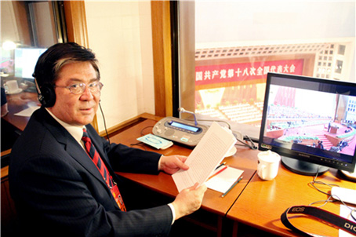

阿力木沙比提 翻译是心灵与心灵的碰撞
来源：中华儿女报刊社

秋意渐浓，去往中国民族语文翻译局的路上，红砖楼墙体上层层叠叠的爬山虎开始由绿变红，幽静的路上显出几分活泼。
敲门走进位于翻译局二楼阿力木沙比提的办公室，他正在和同事说着事儿，看得出，他挺忙。阿力木沙比提现任中国民族语文翻译局局长、总译审。一边是行政工作，一边是业务工作，两者兼顾，忙碌可想而知。
从1982年到中央民族学院进修，之后一直留在北京工作的阿力木沙比提，至今来京三十多年了，口音中还是能够听出一点新疆味道，“乡音难改啊！”他爽朗地笑，“这新疆口音是改变不了了。”
阿力木沙比提的童年时代和青年时代是在库尔勒度过的，他的父母亲都在金融系统工作，他从小在机关大院里长大，“小时候，就跟一帮汉族小朋友一起玩儿，也根本没有什么民族之分，大家玩得都很开心，”阿力木沙比提陷入了回忆，“一起玩得渴了，不管走到谁家，舀起水缸里的水就喝，饿了，拿起馕就吃，不管是什么民族，在一起都很融洽，大家也不会因为民族不同而疏远。”在机关大院里长大的阿力木沙比提，就这样，交到了很多汉族发小儿，他的汉语就在那时候打下了牢固基础。
阿力木沙比提在家里排行老大，还有一个年龄相差不大的弟弟。从小，他的学习就没有让家里人操过心，一直担任班里的班长、团支书等职务。儿时的理想并未有多么清晰，但他从小就有英雄情结，也向往外面广阔的世界，心里总有一个朦胧的声音说，“长大了，一定要出去看看这个世界。”
优秀翻译的成长之路
1975年，阿力木沙比提高中毕业，赶上了知识青年上山下乡的尾巴，他也随着政策步入了“下乡”的队伍中，走入了距离库尔勒市几十公里外的一个公社，在这里，与农民朋友一起干农活，一起吃饭一起玩闹，农活闲暇时，17岁的阿力木沙比提有时躺在草地上看天空飘荡的白云，思绪也跟着飞到远方。1978年3月份，巴州师范首次对外招收翻译班，阿力木沙比提因为有良好的汉语基础，维语又是母语，因此很顺利就考取了，毕业后，他进入市政府机关工作，做了一名翻译，从此与翻译结下了不解之缘。
1982年，中央民族学院（现中央民族大学）从新疆招收翻译专业的学生，考试很严格，封条贴封，专人专送，犹如高考，考题也很难，不过，这对于自小有维汉语言基础，又在师范院校学习过的阿力木沙比提来说，都不是问题，他又一次顺利考取。
“来到北京，看着车水马龙的街道，行色匆匆的人群，我觉得这就是我想要来的地方。”阿力木沙比提回忆着初来北京的情景，儿时憧憬的“外面的世界”，如今就在眼前，置身其中，年轻的阿力木沙比提很兴奋。他拿出百倍的热情投注到翻译专业学习中。因为成绩优异，毕业后他被调入我国唯一的国家级少数民族出版机构——民族出版社工作。那一届，来自新疆的几十名学员中，只有他和另外一个同学留在了北京。
“翻译人员的职业生涯，就是在不断学习、探索、提高和完善的过程中度过。”阿力木沙比提说。他的业务能力也在日积月累的专业训练中不断增进。至今，他还记得在民族出版社工作时的第一篇翻译稿件。
“来到单位的第一次任务，是翻译王蒙先生发表在《红旗》杂志上的一篇文章，这篇文章大概一万三千字左右，我翻译了一个星期，遇到稍有拿不准的词语就去查字典，做笔记，手写稿大概写了90多页。”时隔30年了，阿力木沙比提依旧记得细节，“翻译是一项特别严谨的工作，对每一篇译稿都要进行初审、复审、终审。我那篇90多页的翻译稿上，密密麻麻的有很多修改意见，对照修改意见，我又重新抄写了一遍。”此后，他长年主持《红旗》（后更名为《求是》）杂志的翻译及译文审定工作。
后来，在一次文化活动中，阿力木沙比提见到了王蒙，他和王老聊起这段翻译往事，两人哈哈大乐。
“翻译是不同文化之间的交流，是心灵与心灵的碰撞。”阿力木沙比提深有感触，“它不仅仅是把一种语言翻译成另外一种语言，也不是语码的简单转换，它是文化符号，更需要情感。”
凭借着认真，努力，阿力木沙比提很快在出版社成长起来，短短几年，他就从初审编辑做到了主力编辑，开始参编或主编大型文献资料和重点书籍，并主持重大出版项目。
与同事们攻克一个又一个难关
不论是在民族出版社，还是在民族画报社，以及后来到了中国民族语文翻译局，阿力木沙比提一直都未离开过翻译事业。随着在翻译业务上的精进，他的领导才能也被用在了更为重要的位置上。2014年，他被任命中国民族语文翻译局局长一职。尽管行政工作繁忙，他也从未放弃自己的业务。这两年的全国两会，都是他担当同声传译的重担。“同声传译的准确性是最基本的要求，还有就是，要传递出领导人讲话的感情色彩，如果领导人在台上讲的飞扬激昂，我们却语气平淡，那么这样的翻译也是有所缺失的，所以，同声传译对待译者的要求很高，”阿力木沙比提诚恳地说，“一个优秀的翻译人员要在每一次业务中不断总结经验，这样，才能不断地提高。”
在民族语文翻译局工作，阿力木沙比提一个很大的体会是，这里的工作人员政治素养都特别高，这是一个随时可以去打硬仗的队伍，他举了一个例子——2011年七一前夕，阿力木沙比提从中央有关部门召开的紧急会议上接到一项任务：在建党90周年庆祝大会召开之前，将中央领导的讲话稿翻译成5种少数民族文字的版本。这是一项重大而紧急的政治任务。阿力木沙比提意识到此事的重要性，会议结束后，他立刻返回单位，向局党委书记作了汇报。同时，根据任务量，迅速地计算完成这项工作，需要多少人，大致估计了一下，向党委提出了自己所需的人手。
当天下午1点，翻译局召开有关部门负责人会议，要求相关人员做好准备。下午3点，一支52人、涵盖5个少数民族文种的精干队伍整装待发。看着迅速集合起来的五十余人，每个人提着箱子排队上车的情景，阿力木沙比提内心感觉特别骄傲，内心忍不住为同事们竖起了大拇指，深深点赞。
经过两天两夜的奋战，各语种团队成员顺利完成了翻译任务。当建党90周年庆祝大会拉开帷幕，时任总书记胡锦涛同志开始向全国人民讲话时，中央人民广播电台和民族地区各大主要媒体用5种少数民族文字版本的译稿如期同步播出了。在中国民族语文翻译局60年的发展历程中，这样的紧急任务并不鲜见。“多年来，我们形成了‘讲政治，顾大局，一丝不苟，甘于奉献’的优良作风和‘团结、紧张、严肃、活泼’的工作面貌，”阿力木沙比提说，“在日常的工作中，锤炼了一支能挑重担、能打硬仗的队伍。”
翻译要讲政治、讲大局、讲责任
阿力木沙比提的办公室内，放着很多翻译手稿以及规范的统一用语，在翻译大部头著作，需要多人集体工作时，新词术语统一标准尤为必要。
在集体翻译重要文献时，特定的词汇需要统一，一些新词术语，尤其是有广泛影响力的，都需要一个恰当统一的翻译。
每个民族的文化背景不同，语言表述习惯也有着很大的差异。比如，“中国梦”的翻译。“梦，如果直接用维语中的‘梦’来翻译，明显是不妥当的，因为在维语中，‘梦’这个词有白日梦的意思，是不可实现的，”阿力木沙比提解释说。“中国梦”这一词语被广泛使用，为它找到一个精准的翻译显得尤为迫切。意识到这一点，他立即和有关专家进行充分交流，并征求新疆有关方面的意见后，建议使用维吾尔语中相当于“期盼”的一个词，来指代“中国梦”里的“梦”。建议得到了业界人士共识，目前已经成为维吾尔语“中国梦”的规范版本，收录在《蒙藏维哈朝彝壮新词术语汇编》（以下简称《汇编》）之中。
《汇编》是阿力木沙比提主持的重大项目“少数民族语文新词术语规范化建设”的成果体现。随着社会发展的日新月异，大量新词术语不断涌现，新词术语不统一、不规范、一词多译或乱译等现象比较严重。“语言规范程度是一个民族文明程度的重要表现。”阿力木沙比提说，不规范、不统一的新词术语得到规范和统一，对于宣传党和国家的方针政策、法律法规都有积极的作用，也能帮助少数民族群众准确学习掌握现代科学技术、文化知识，推动他们对民族语言文字的学习、使用和发展，促进跨省区民族间的交流和民族学领域的国际交流。为此，中国民族语文翻译局于2010年启动了“少数民族语文新词术语规范化建设”项目的新词术语审定工作，由阿力木沙比提主持负责，每年组织全国各地的专家开展蒙古、藏、维吾尔、哈萨克、朝鲜、彝、壮7个语种的新词术语规范化工作。
从2008年开始，中国民族语文翻译局先是用两年的时间到相关省区调研，与当地民语委或相关工作部门一起，广泛调查了解新词术语的翻译、使用情况，收集因一词多译而不统一、不规范、有异议的词条和旧词新译的词条，并将这些词条进行分类整理，供专家审定。接下来每年召开7个语种的专家审定工作会。阿力木沙比提同时也作为翻译专家，参与维吾尔语、哈萨克语两个专家小组的审定工作，和其他专家一起，集中对200至300条新词术语进行审定、规范。
“每一个词都要经过反复推敲、多次讨论，最终形成一致意见。”阿力木沙比提说，最后还要组织有关专家对少数民族新词术语成果进行鉴定。经鉴定后的新词术语，则被分类编辑成《新词术语手册》出版推广。
近几年来，“少数民族语文新词术语规范化建设”项目已经完成了对1万多条新词术语的审定规范，并以《汇编》的形式，送交国家有关部门采纳并推广使用。阿力木沙比提还同时主持了《马恩选读<精华版>十卷校译出版》、《中华人民共和国法律释义及使用指南》等重大项目。对每一个项目，他都用心去做，对项目实施计划进行严格的管理，保证分阶段项目保质保量完成，还亲自参与承担项目的部分具体内容。“国家重视民族语文翻译工作，为这项事业投入大量人力和资金，我们必须本着讲政治、讲大局、讲责任的态度，将各个项目做好做踏实。”阿力木沙比提说“民族语文翻译工作者要在正确认识自身价值的基础上，相互交流，资源共享，共同提高；要拓宽工作思路，创新工作模式，积极探讨解决问题的新方法、新措施，使民族语文翻译工作更好地适应社会的发展和时代的要求。”
除了做好翻译局的管理工作和业务工作，阿力木沙比提在沟通维汉民族文化交流方面也做了大量工作，最近在央视一套热播的电视剧《丝绸之路传奇》里，他担任民族文化顾问。“最初看片子的时候，我建议起名《艾德莱斯传奇》，毕竟，这部片子讲述的是发生在西北一个纺织厂的故事。”阿力木沙比提说。不过，最后播出时还是按照《丝绸之路传奇》定的，或许是从观众熟知的角度考量的吧。阿力木沙比提手里拿着这部电视剧的光碟，“整部电视剧我认真地看了，”对此，他有学者的严谨。
做了30多年的翻译，阿力木沙比提从未感觉到倦怠。国际译联主席贝蒂•科恩曾说：“翻译就像水和电一样，它的存在人们是不注意的，但是它消失了，没有了它，世界就无法生存。”这句话阿力木沙比提很认同——这份工作如此重要，如此神圣，他会继续认真努力地继续下去。（记者/王海珍）